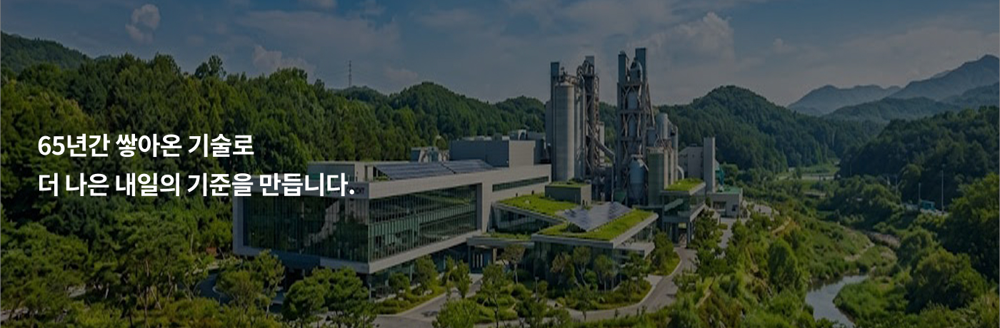
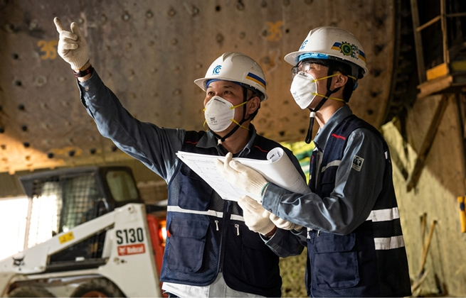
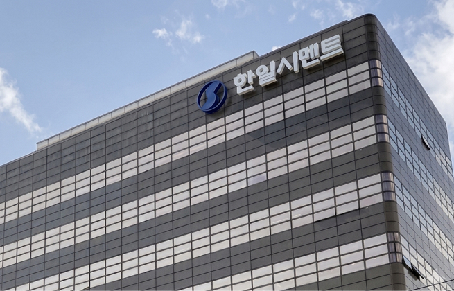
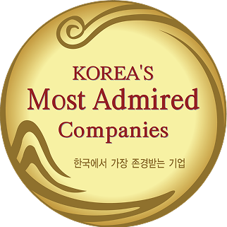

회사소개
회사소개
> 회사소개 > 기업정보
Business Introduction기업정보
단단한 기술로, 신뢰의 반세기를 쌓다.
대한민국 시멘트 산업의 표준,
한일시멘트
- 1961년 설립된 한일시멘트는 국내 건자재 업계를 선도해 온 시멘트 제조 기업입니다.
- 시멘트 생산공장인 단양공장과 영월공장을 비롯해 전국 각지에 생산거점과 유통망을 구축하고 있으며, 철저한 품질관리를 기반으로 시멘트, 레미탈, 레미콘 등 다양한 건자재를 안정적으로 생산하고 있습니다.
- 또한 폐열을 이용한 ECO발전, 순환자원 활용, 저탄소 시멘트 기술 개발 등을 통해 친환경 생산체계를 강화하고 있습니다. 한일시멘트는 품질 경쟁력과 기술 혁신을 바탕으로 지속가능한 미래와 탄소중립 실현에 앞장서 나가겠습니다.

- 창립1961
- 임직원수980명
- 생산공장2개
- 유가증권시장 상장2018.08
한일시멘트가 걸어온 길
투명한 경영과 산업보국의 정신으로 반세기 넘게 대한민국 기간산업과 함께해 왔습니다
-

- 투명 경영과 성실한 납세
- 공개경영을 통해 공정하고 투명하게 운영합니다.
- 초기 공장 설립 단계부터 경쟁 입찰로 업체를 선정하고 공개 채용 방식을 도입하는 등,
기업 경영이 늘 공개적으로 이루어지도록 해왔습니다. 성실한 납세를 인정받아
정부로부터 녹색법인으로 지정되기도 했습니다.
-
- 수익성 위주의 내실경영
- 규모보다 내실, 안정된 재무구조를 지켜왔습니다.
- 외형 성장과 사업 확대에 전력을 기울이기보다 수익성 확보에 회사 경영의 틀을 맞췄습니다. 생산성 향상과 원가절감 노력을 통해 국내 기업 평균을 크게 밑도는 부채비율을 안정적으로 유지하고 있습니다.
-

- 국가경제 발전을 위한 경영
- 산업보국의 정신으로 기간산업에 집중했습니다.
- 산업보국이라는 창립이념은 한일시멘트의 남다른 기업경영에 큰 영향을 미쳤습니다. 반세기 동안 시멘트와 기초건자재 같은 기간산업에 집중하며 국가경제 발전과 궤를 함께해 왔습니다.
-
- 앞선 경영정책
- 업계 최초의 기록을 여러 차례 만들어 왔습니다.
- 1969년 시멘트 업계 최초의 기업 공개를 시작으로 업계 최초의 노조 설립, 국내 최초의 해외 플랜트 수출, 드라이 모르타르 레미탈 개발까지 앞서 나갔습니다. 1998년부터는 그룹웨어와 전자결재, 전사적 자원관리 시스템을 차례로 구축했습니다.

한국에서 가장 존경받는 기업 시멘트 산업부문
투명경영과 산업보국의 정신, 인간존중의 경영방식을 인정받아 한국능률협회로부터 2004년부터 23년 연속 시멘트 산업부문 한국에서 가장 존경받는 기업에 선정되었습니다.
- 23년 연속 선정
- 6회 경제정의기업상
- 2003 금탑산업훈장
- 2005 국가품질경영대회 대통령상
회사 개요
- 대표자 전근식, 오해근
- 상장일 2018년 8월 6일
- 주요제품 시멘트, 특수시멘트, 레미탈, 레미콘, 고강도 혼합재
- 설립 1961년 12월 28일
- 임직원수 980명 2025년 기준